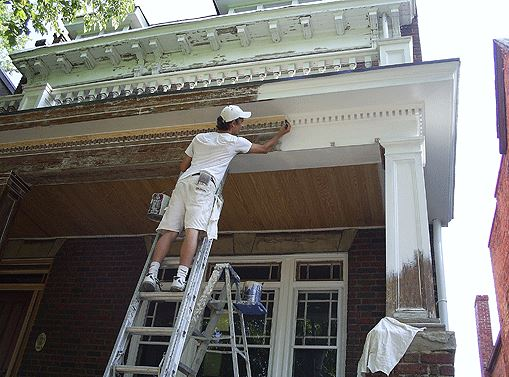
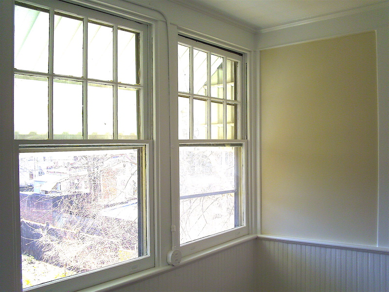
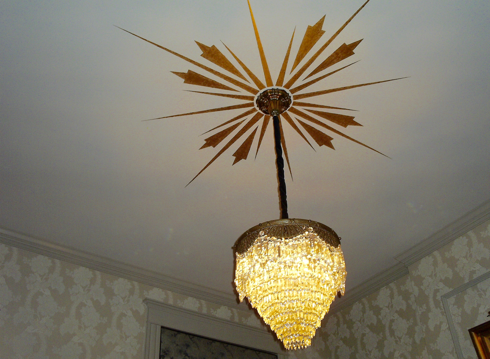

Services
Exterior Painting
Exterior painting often includes powerwashing and paint removal in the form of scraping, sanding, or ultraviolet paint removal.
Interior Painting
Interior painting includes color consultation and may require wallpaper removal, plaster repair, and/or drywall repair.
Carpentry

Carpentry work ranges from custom-built specialty items such as wine racks, to simple repair or siding or remediation of rot.
Decorative & Faux
Decorative painting styles and faux finishes may be applied to walls, cabinetry, furniture, etc. Finish types include marbled, distressed, antiqued, and more.